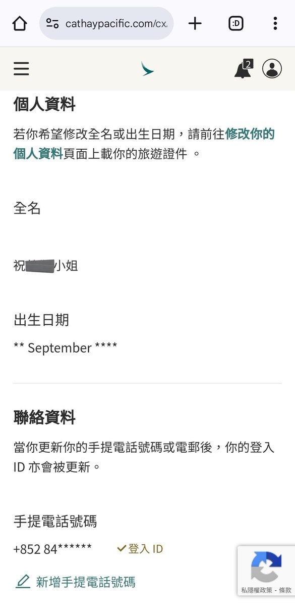

RedFox（2代目）🏳️⚧️🇭🇰🇲🇴
@FoxRed695449
@AXLV98 實際社會生活上大家看見我穿裙子都會叫我女性稱謂的，就連某些必須寫性別的場所我都是寫小姐的
至於你提的競爭，笑死我了，你這是原始動物配偶嗎
現代社會和得來，就叫朋友；合不來，就不交往，我朋友一大堆呢，看見沒我3000多的粉絲了嗎

咿呀
@AXLV98
@FoxRed695449 就™人说啥你信啥呗，只要你喜欢你就信呗，人支持多元是生意，你想要多元图啥啊？作为男的比不过，想跟女的比到头来男的不待见，女的也嫌弃，整一个两头堵把自个儿心态玩炸了，™来一句我有玉玉症躲被窝里哭，本身就j8缺爱心里残疾，回头给还给自个儿猛猛上强度，这不是有病是啥啊？